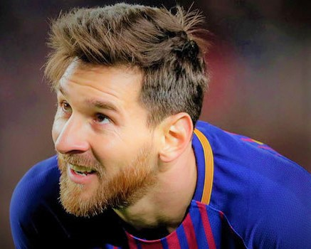
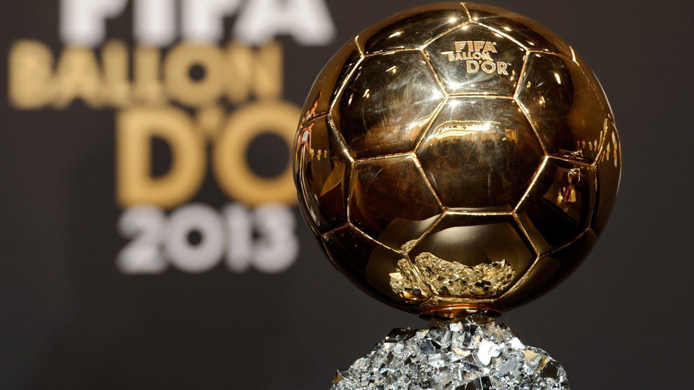
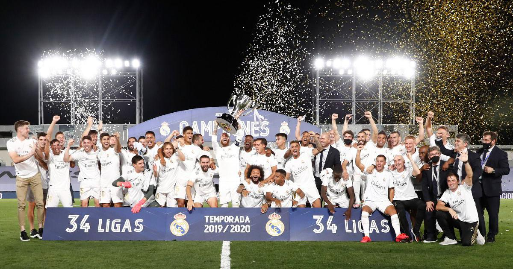
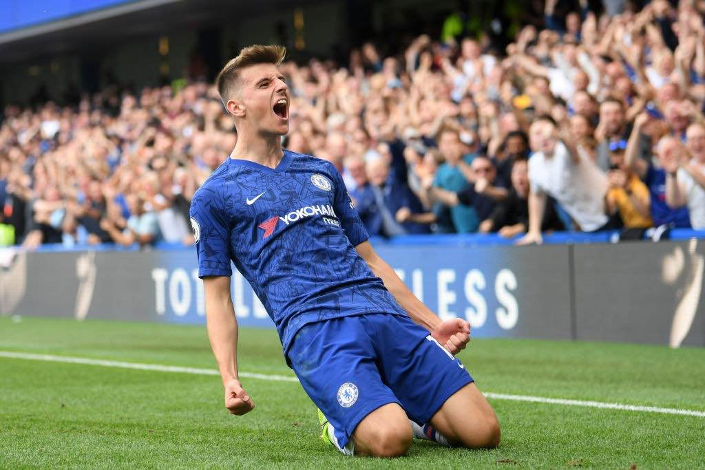
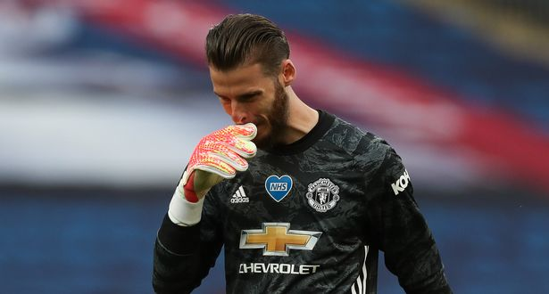
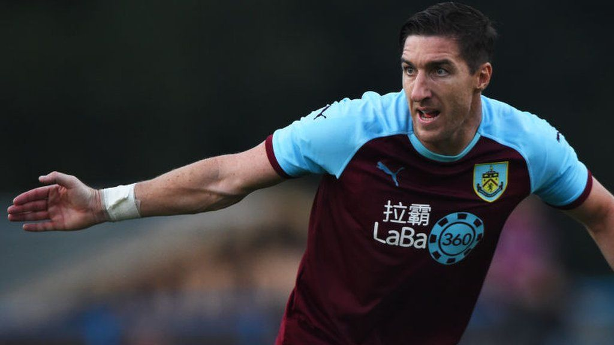
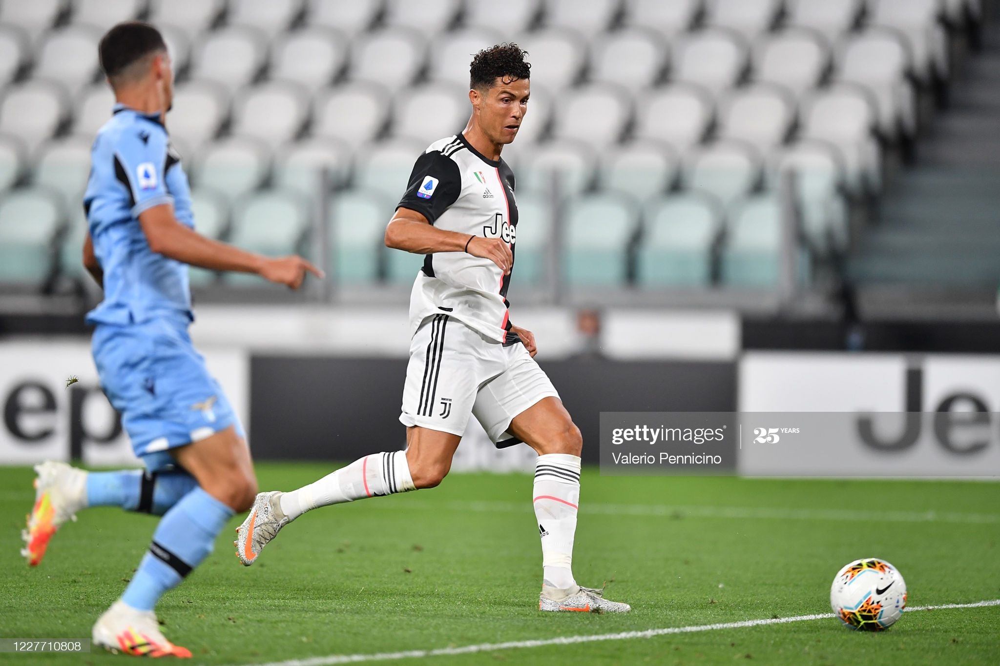
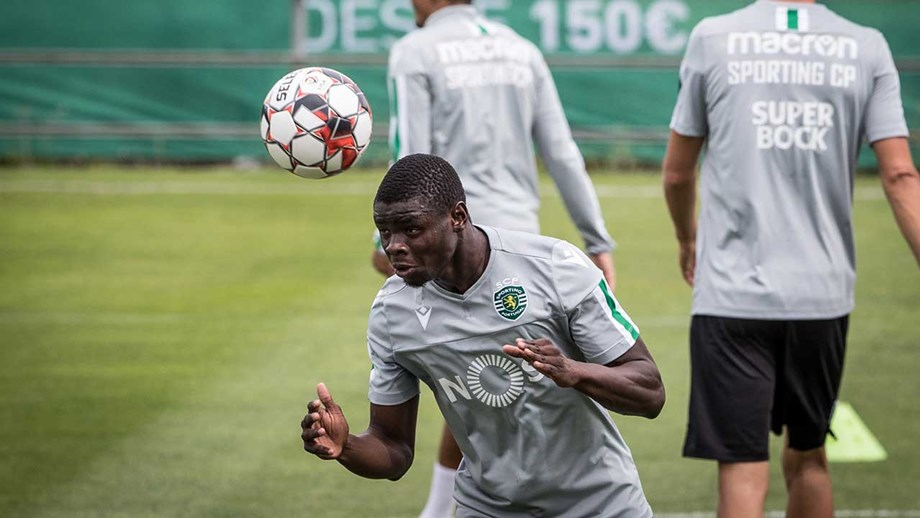
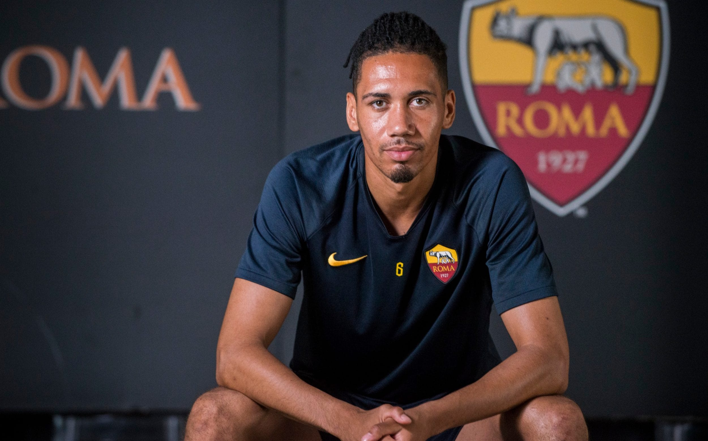

Whether it is the latest news of the general nature you are after, the transfer dealings you can find in our transfer news and rumours section, filled with the up-to-the-minute transfer stories from local sources, or the extensive coverage of all relevant soccer events around the globe – through well-informed and opinionated articles from our top writers – Goal Line is the place to visit.
For all of those who like to push their love for soccer to a higher level and are ardent about following detailed statistics that they can put in a good use to win a (responsible) bet or two, we are here to offer an extensive betting guide and an in-depth betting section regularly updated with the comprehensive match predictions, betting promotions and tips.

Will Messi leave?

Ballon d'Or 2020 Cancelled

La Liga To Real

Is Chelsea doing right?

Manchester United Critics

Stephen Ward has left the Potters

Juventus v SS Lazio - Serie A

United Wantes Nani

Roma Keeps Smalling
×
Will Messi be Missed?
In 2001, Lionel Messi came to Futbol Club Barcelona as a 14-year-old. A total 480 appearances for the senior team and 441 goals (out of 700 in all for club and country so far) later, maybe the wheels have started to come off, if reports from Spain are to be believed. Messi, one of the greatest footballers of all time, might not renew his contract with Barça next year.
What is the issue?
According to Spanish radio network Cadena Ser, the greatest player in Barcelona’s history has called off negotiations over the extension of his contract at the club. Messi’s current contract comes to an end in 2021. Over the past decade-and-a-half Messi, has agreed to several contract extensions. The last deal was signed in 2017. ESPN has reported that off-the-pitch bust-ups with the Barcelona board is the reason why the 33-year-old has finally lost his patience.
×
Ballon d'Or 2020 award cancelled by organisers France Football
The Ballon d'Or, awarded annually to the world's best footballer, will not be held in 2020 due to the "lack of a sufficiently level playing field" caused by the coronavirus pandemic.
Barcelona's Lionel Messi won the trophy in the men's category last year, while US striker Megan Rapinoe won the women's category.
Organisers France Football said the awarding of the prize, which has been given out every year since 1956, would be "not worthy" of the trophy's history.
The organisers added: "We did not want to put an indelible asterisk on the prize list as 'a trophy won in exceptional circumstances due to the health crisis of Covid-19'.
"Protecting the credibility and legitimacy of such a prize also means guaranteeing its irreproachability over time."
England's Stanley Matthews was the first winner of the award when he was voted European Footballer of the Year.
Until 1995, the Ballon d'Or was only awarded to European players, when it was extended to any player from a European club.
From 2007, it was extended to footballers from the rest of the world.
The list of the 30 nominated players is drawn up by the editorial staff of the French magazine. The winner is chosen by journalists from all over the world, with one representative from each nation.
×
La Liga To Real
Real Madrid sealed their 34th LaLiga title on Thursday with a 2-1 win over Villarreal at a sweltering Alfredo di Stefano in the suburbs of Madrid. Zidane’s side have been irresistibly unspectacular since the return of football and it was in that same style that they won their 10th game in a row and marched to another trophy under their French manager. Zidane, often almost accused of having some secret formula for success that he refuses to divulge, has done it again.
Zidane focused on LaLiga title
Zidane refused to let his mind drift to the possible celebrations and didn’t want to entertain the importance of the game in the grander scheme of things before kick-off on Thursday night. “I don't have to think about if we draw tomorrow, or on Sunday… Tomorrow, we will be going all out to win the game, as we do in every game,” he said in the press conference before the Villarreal game. There had to be part of him that sensed something inevitable about a title win given their recent run but he wasn’t about to show that in public.
×
Mason Mount Proving His Time Is Now At Chelsea
Chelsea faced uncertainty ahead of the 2019/20 season. FIFA announced the club was banned from signing players for the next two transfer windows due to breaching rules in relation to signing young players.
More importantly, the ban meant that Chelsea had to rely on their youth, and this was something different for a club well known for spending big, and bringing in high caliber, marque names.
Coming through the Chelsea academy to the first team is very difficult, as most players are loaned out, but with the transfer ban currently imposed on Chelsea, there’s never been a bigger chance for the club’s youth players.
Players such as Mason Mount, Tammy Abraham, and Kurt Zouma now have their chance with the first team and, more importantly, can prove that they belong with the club. Mount in particular has finally had an opportunity presented to him.
×
Manchester United great Paul Scholes hits out at David de Gea Critics
Paul Scholes has backed David de Gea to return to top form for Manchester United after his latest mistake against Chelsea in the FA Cup semi-final on Sunday.
United crashed out of the competition following strikes from Olivier Giroud and Mason Mount as well as an own goal from Harry Maguire. De Gea could have done better on Chelsea's first before making a shocking error to allow Mount to score.
His latest blunder prompted some United fans to demand that Dean Henderson is installed as the club's first-choice goalkeeper next season. The England international has impressed during a two-year loan spell with Sheffield United and De Gea's poor form could give him the opportunity to stake his claim for the no.1 jersey.
Despite his recent errors, De Gea was backed by manager Ole Gunnar Solskjaer after the defeat but the Norwegian warned he must address his slump.
Scholes agrees with the current United boss and claims United would not have finished in the top half of the table in the last six seasons if not for the Spaniard.
"Yep, he's having a bad time, but without him United wouldn't have finished in the top 10 in the last six years," Scholes wrote on Instagram. "He'll be back!"
De Gea extended his United contract back in September and is one of the highest paid goalkeepers in the world. He recently surpassed Peter Schmeichel to become the most capped foreign player in the club's history.
The Spain international stated he hoped to have many more years at the club after breaking Schmeichel's record.
×
Stephen Ward leaves Stoke City
Championship outfit Stoke City have announced that Republic of Ireland international Stephen Ward has left the Potters after spending the 2019/2020 season at the Bet 365 Stadium.
Ward, who announced his retirement from international football last year has spent 13 years in England since signing for Wolves from Bohemians back in January of 2007.
Following his arrival at Molineux, the Dubliner enjoyed a seven-year spell in which he played in many positions including centre forward, which helped him to score some memorable goals, including a winning goal against Liverpool at Anfield back in 2010.
During that spell, Ward was also an influential part of the Republic of Ireland side that qualified for Euro 2012 through a play-off against Estonia.
Ward scored for the Republic of Ireland in a 1-1 draw in the second leg of the tie after the Boys in Green thrashed Estonia 4-0 in Tallinn in the first leg.
In 2014, Ward would leave Wolves for Burnley where he would link up with fellow countrymen Kevin Long and Steven Reid.
The Portmarnock native would stay at Turf Moor for five seasons before departing to join Stoke in the summer of 2019.
Ward turns 35 next month so it will be interesting to see what his next move in football will be.
×
Juventus 2-1 Lazio: Cristiano Ronaldo Nets Double In Pivotal Win
Cristiano Ronaldo became the top scorer in the 2019-20 Serie A campaign with his double against Lazio, but he also put Juventus one step away from winning the club’s ninth consecutive league title. The Portuguese star netted a brace and carried Juventus to a huge 2-1 win over Lazio at Allianz Stadium on Monday. Ciro Immobile netted Lazio’s lone strike late in the second half, but that wasn’t enough to mount a comeback.
With the win, Juventus now sit in first place of the standings with an eight-point lead over Inter Milan and four matches left in the schedule. Putting things differently, Juventus now need two more wins in the final four games to become league champions. Again.
The first half didn’t generate many scoring chances on either hand. Ronaldo was active for Juventus, but the Portuguese star only accounted for one dangerous chance before the break. His shot, though, went slightly wide. The Old Lady had the best chance before the break in the 11th minute with a header from Alex Sandro following a cross from de Ligt. The Brazilian’s effort rattled the post when Thomas Strakosha was completely beaten, though.
Lazio had a few decent moments, mostly through Danilo Cataldi and Immobile. The Italy international generated his side’s best effort in the dying minutes of the first half, but his shot went straight into Wojciech Szczesny’s left post. The first half finished with a scoreless draw, but there would be more emotions after the break.
Ronaldo seals the deal for Juventus with second-half brace
Juventus only needed a few minutes to establish the difference in the second half. A shot from Paulo Dybala in the second half bounced off a defender, and the referee, Daniele Orsato, called for a penalty due to handball after consulting the play with the VAR. Ronaldo stepped up and didn’t miss, placing the ball into the right side of the goal despite Strakosha’s dive. The former Manchester United star needed just three minutes to double his tally, as he was at the end of a two-on-one counter-attacking sequence.
Ronaldo received a pass from Dybala to make it 2-0 in the 54th minute. It was Ronaldo’s 30th goal in the current Serie A season, a strike that left the Portuguese star all alone at the top of the scoring charts. More importantly, it allowed Juventus to create an eight-point separation with Inter Milan, who were coming off a draw against AS Roma on Sunday.
Lazio didn’t give up and ultimately found an equalizer when Immobile netted a penalty of his own in the dying minutes of the second half. It was Immobile’s 30th goal of the campaign, and he is now at the top of the scoring table alongside CR7. It will be a down-to-the-wire race to see which player ends up being the league’s top scorer.
The Rome-based side didn’t have more time to pull a comeback and were forced to settle with the 2-1 loss. It ended Lazio’s title chances, but it also boosted Juventus’ likelyhood of winning the Serie A for a ninth straight year. And once again, it all came thanks to Cristiano Ronaldo.
×
United preparing £10m package for Sporting starlet after Nani recommendation
Manchester United are believed to be chasing Sporting Lisbon left-back Nuno Mendes following a recommendation from former winger Nani.
Nani, who played for both clubs earlier in his career, has reportedly given the 17-year-old a glowing reference to current United boss Ole Gunnar Solskjaer.
That’s according to the Daily Star, along with a claim that Mendes initially came up in talks between the two clubs when the Red Devils signed Bruno Fernandes in January.
He obviously wasn’t included in the deal, but it sounds like United are keeping tabs on the youngster.
A package worth £10m is being discussed, as per the Daily Star report which states the player is keen to move after refusing to sign the new two-year offer Sporting made him.
The Portugal U19 international is regarded as one of the brightest prospects in the country and that helps explain why Solskjaer would try bring him to Old Trafford.
We already have Luke Shaw and Brandon Williams fighting for the left-back spot but more competition is always welcome. United need more depth and quality in their squad to challenge for major honours.
Meanwhile, ESPN claim United are keen to keep Portuguese right-back Diogo Dalot at the club despite interest from Barcelona and Paris Saint-Germain.
×
Roma push to keep Smalling
According to a recent report from Sky Sports, Roma and Manchester United are still quite far apart in their valuation of defender Chris Smalling – despite the former being incredibly eager to keep him in Italy.
Roma are hoping to keep the Englishman on the books for at least another year following his successful loan spell with the club, and they’re believed to be willing to pay £2.5 million in addition to an obligation to buy for £14 million. Unfortunately for them, that doesn’t quite meet the expectations set out by the Red Devils.
The player and the club are both interested in seeing Smalling stay in Italy on a permanent deal instead of another loan, and United have also not yet agreed on a loan extension until the end of August.
There are some clear and obvious defensive issues that need to be resolved by Ole Gunnar Solskjaer at the club, and this is one of them.